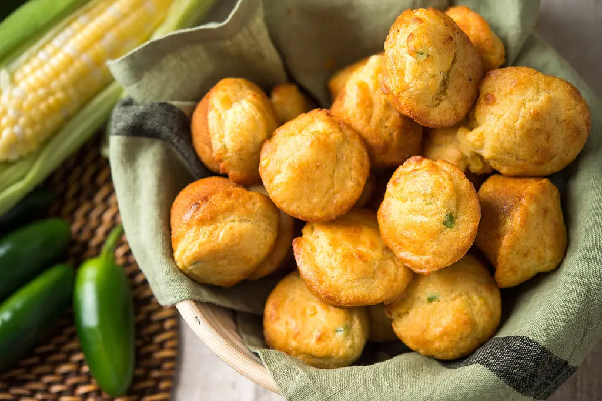

Corn and Jalapeño Muffins

Source: NYT Cooking
Description
The flavor of these buttery, miniature muffins is amped up with sautéed corn kernels and jalapeño chiles.
They are the perfect accompaniment to a pot of beans, but are tender and delicate enough to serve with
an elegant chicken stew.
Ingredients
- 6 tablespoons unsalted butter, plus more for buttering muffin tins
- 1 cup raw, tender corn kernels
- 1 jalapeño chile, finely chopped
- Kosher salt
- Ground black pepper
- 1 cup / 135 grams all-purpose flour
- 1 cup / 145 grams white or yellow cornmeal
- 1 1/2 teaspoons baking powder
- 1 1/2 teaspoons baking soda
- 2 eggs, beaten
- 1 1/2 cups buttermilk
- 3 ounces / 85 grams grated Cheddar cheese
Instructions
- Heat oven to 400 degrees. Put 2 tablespoons butter in a skillet over medium heat. Add corn kernels and jalapeño and
cook gently for 2 minutes. Season with salt and pepper and set aside. Melt 4 tablespoons butter in a separate pan.
- Mix together flour, cornmeal, baking powder, baking soda and 1 teaspoon kosher salt. Beat in eggs and buttermilk
to make a thick batter. Add corn kernels and jalapeño, as well as the melted butter from the separate pan,
then stir in grated cheese.
- Butter miniature muffin tins and fill with about 1½ tablespoons batter per muffin.
Bake for 10 minutes, until golden.
- For larger muffins, fill tins ¾ full with batter. Increase baking time as necessary, testing for doneness
with a wooden skewer.